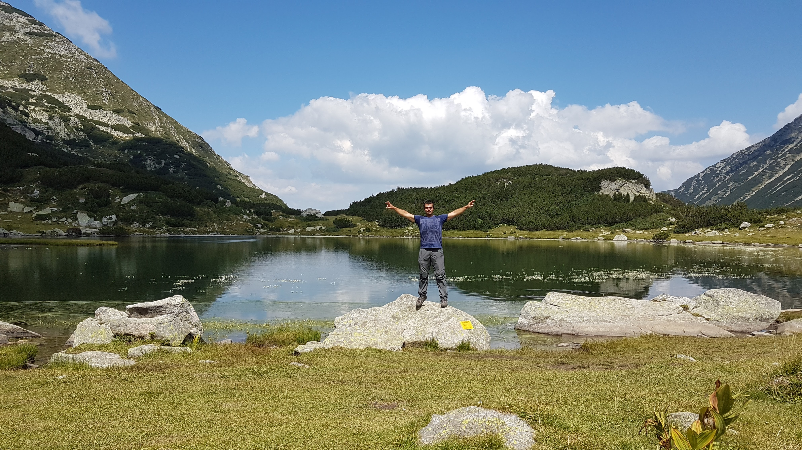

Първата ми страница е за моето хоби.

Информация
Туризъм, в класическия смисъл, се нарича пътуване с цел отдих и развлечение. Той може да се разглежда и като стопански отрасъл, който обслужва туристическата дейност. Основател на българския туризъм е българският писател и общественик Алеко Константинов. Понятието произлиза от френската дума „tour“ (обиколка). Туризмът има важно значение в социален и икономически аспект. Благодарение на него човешкото здраве и трудоспособността се стабилизират и се разкриват работни места, които понякога са основен източник на доходи за определено селище и подобряват жизнения стандарт в него. В личен план, пътуванията, които хората предприемат, често обогатяват тяхната езикова, познавателна и социална култура.
Полезни възки